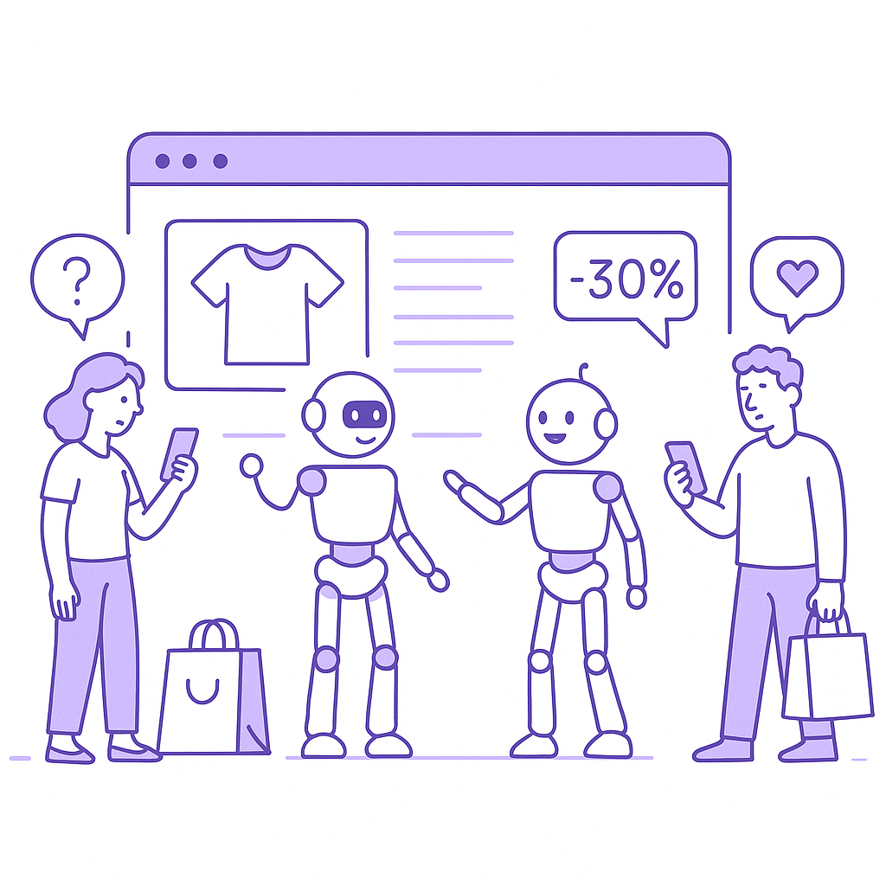

Publishing Recommendation
publishThe drafted posts effectively leverage current trends and align with the brand's voice, offering practical insights without falling into hype or unsupported claims.
Today's posts effectively tackle significant topics like AI security gaps and chip exports with clarity and relevance. They maintain Purands AI's practical and insightful tone, offering readers actionable insights without exaggeration or fluff. The posts are well-structured and stay true to the brand's mission of providing valuable, evidence-based perspectives.
LinkedIn Posts (10)
1. Agent security gap: 54% of enterprises report incidents ★ Purands solution · high priority
CTA: How are you ensuring your AI agents handle data securely?
Caption: AI agent security incidents reported by enterprises.
Alternative hooks
- 54% of enterprises have faced AI agent security incidents.
- Customer trust is fragile, especially with AI handling their data.
- Are your AI agents putting your customer data at risk?
Research behind this post (sources, summaries & confidence)
Agent security gap: 54% of enterprises report incidents conf 0.85 · AI in business
Security remains a critical concern as AI agents gain access to sensitive data. This discussion is crucial for retention marketing, where customer trust and data security are paramount. Addressing these gaps can mitigate risks and enhance customer loyalty.
Sources & what I took from each
- 54% of enterprises report AI agent security incidents.: VentureBeat article highlights the prevalence of security incidents involving AI agents. ↗ read source
Statistics
- 54% of enterprises have experienced AI agent security incidents.
Examples
- Incidents involving AI agents leading to security breaches in enterprises.
Recent news
- VentureBeat's focus on AI agent security concerns.
Original trend links
Risks / caveats
- Increased security risks can lead to loss of customer trust.
- Potential regulatory implications for data breaches.
2. X relaunches Android app after major overhaul ★ Purands solution · high priority
CTA: What mobile-first strategies have you found effective in your market?
{kind=link}
Image prompt · isometric-flat
Caption: Mobile-first strategies boost retention.
Alternative hooks
- A year-long engineering effort culminates in X's Android app relaunch.
- Why did X spend a year overhauling its Android app?
- X's Android app overhaul: A lesson in customer retention.
Research behind this post (sources, summaries & confidence)
X relaunches Android app after major overhaul conf 0.80 · Product management
The relaunch of X's Android app, involving significant engineering efforts, exemplifies the importance of app performance and user experience in customer retention. This is especially relevant for mobile-first markets in APAC.
Sources & what I took from each
- X has relaunched its Android app after a major overhaul.: TechCrunch reports on the significant engineering efforts behind the app's relaunch. ↗ read source
Examples
- X's app overhaul to improve user experience in mobile-first markets.
Recent news
- TechCrunch covers the relaunch of X's Android app.
Original trend links
Risks / caveats
- Potential user dissatisfaction if the relaunch does not meet expectations.
- Technical challenges post-relaunch affecting app performance.
3. Google's AI Search impacts open web traffic ★ Purands solution · high priority
CTA: How is your brand adapting to the changes in web traffic patterns?
Caption: Impact of AI Search on web traffic.
Alternative hooks
- A 40% drop in human traffic to business websites isn't just a statistic.
- Google's AI-driven search is reshaping web traffic - how do you adapt?
- Traditional SEO is losing ground. What's your next move?
Research behind this post (sources, summaries & confidence)
Google's AI Search impacts open web traffic conf 0.75 · AI industry
Google's AI-driven search changes significantly impact web traffic patterns, affecting how brands engage customers online. This has direct implications for digital retention strategies, as businesses must adapt to shifting SEO and traffic dynamics.
Sources & what I took from each
- 40% drop in human traffic due to Google's AI search.: The New York Times reports significant changes in web traffic patterns attributed to Google's AI search. ↗ read source
Statistics
- 40% reduction in human website traffic.
Examples
- Businesses experiencing lower web traffic due to Google's AI search adjustments.
Recent news
- Analysis by The New York Times on the implications of Google's AI search.
Original trend links
Risks / caveats
- Websites may experience reduced visibility and engagement.
- SEO strategies might need significant adjustments to adapt.
4. Agent evaluation gap: Trust issues in AI deployment ★ Purands solution · high priority
CTA: Have you faced similar trust issues in AI deployment? Share your experience.
Alternative hooks
- Enterprises are deploying AI agents even with trust concerns looming.
- AI agent evaluation gaps: a hurdle that Purands AI overcomes with precision.
- In retention marketing, trust in AI performance isn't optional. It's essential.
Research behind this post (sources, summaries & confidence)
Agent evaluation gap: Trust issues in AI deployment conf 0.75 · AI in business
The evaluation challenges of AI agents in enterprise settings underscore the need for reliable performance metrics. In retention marketing, accurate agent performance assessments are crucial for optimizing customer interactions.
Sources & what I took from each
- AI agent evaluation issues are leading to trust concerns.: VentureBeat discusses the gap in reliable evaluation metrics for AI agents. ↗ read source
Examples
- Enterprises deploying AI agents despite known evaluation gaps.
Recent news
- VentureBeat's analysis on AI agent evaluation challenges.
Original trend links
Risks / caveats
- Potential trust issues with AI deployment affecting customer interactions.
- Inaccurate performance metrics could lead to suboptimal outcomes.
5. AI intent gap creates e-commerce challenges ★ Purands solution · high priority
CTA: How do you handle intent predictions in your e-commerce strategy?

⬇ Download image{kind=link}
Image prompt · isometric-flat
Caption: AI agents bridging the intent gap.
Alternative hooks
- AI is changing how shoppers find what they need online.
- The e-commerce world is facing a new challenge: the intent gap.
- Understanding consumer intent is the key to better retention.
Research behind this post (sources, summaries & confidence)
AI intent gap creates e-commerce challenges conf 0.70 · E-commerce
The intent gap created by AI in e-commerce affects customer journey optimization. Understanding consumer intent is critical for retention marketing, as it allows for more personalized and effective engagement strategies.
Sources & what I took from each
- AI is creating challenges in understanding consumer intent.: RetailDive discusses the changes AI brings to e-commerce and consumer behavior understanding. ↗ read source
Examples
- E-commerce platforms struggling with consumer intent prediction due to AI.
Recent news
- RetailDive's article on the optimization challenges in e-commerce due to AI.
Original trend links
Risks / caveats
- Misinterpretation of consumer intent can lead to ineffective marketing strategies.
- Potential decrease in conversion rates if not addressed.
6. AI context gap: Trust issues in business context retrieval ★ Purands solution · high priority
CTA: How do you ensure trust in your AI-driven strategies?
Alternative hooks
- AI systems often stumble when retrieving accurate business context.
- Trust issues in AI context retrieval aren't just a glitch; they're a dealbreaker.
- Without precise customer insights, engagement strategies falter.
Research behind this post (sources, summaries & confidence)
AI context gap: Trust issues in business context retrieval conf 0.70 · AI in business
The trust issues in context retrieval for AI agents highlight the challenges in ensuring accurate and relevant information for decision-making. This is critical for retention marketing, where precise customer insights drive engagement strategies.
Sources & what I took from each
- There are trust issues in business context retrieval for AI.: VentureBeat discusses the challenges in reliable context retrieval for AI systems. ↗ read source
Examples
- AI systems facing challenges in accurately retrieving business context.
Recent news
- VentureBeat's coverage on AI context retrieval issues.
Original trend links
Risks / caveats
- Inaccurate context retrieval could lead to poor decision-making.
- Trust issues might hinder AI adoption in critical applications.
7. Shopify loyalty app developments for customer engagement ★ Purands solution · high priority
CTA: How do you see loyalty apps fitting into your customer engagement strategy?
Alternative hooks
- Shopify loyalty apps are evolving fast.
- Ever wonder how points and referrals drive customer loyalty?
- Can a loyalty program really reduce churn?
Research behind this post (sources, summaries & confidence)
Shopify loyalty app developments for customer engagement conf 0.60 · Shopify ecosystem
Continued development in Shopify loyalty apps reflects the platform's centrality in e-commerce strategies. These tools are vital for enhancing customer engagement and retention through personalized experiences.
Sources & what I took from each
- Development of loyalty apps on Shopify is ongoing.: GitHub repositories indicate active development of loyalty and rewards apps for Shopify. ↗ read source
- Focus on customer engagement through points and referrals.: GitHub repositories show features related to customer engagement. ↗ read source
Examples
- Ongoing development of loyalty apps on Shopify to enhance customer engagement.
Original trend links
Risks / caveats
- Potential saturation of loyalty apps in the Shopify ecosystem.
- Challenges in differentiating loyalty apps from competitors.
8. South Korea's chip exports soar, driven by AI demand
CTA: What shifts in the tech landscape are you noticing due to AI's growing hardware demands?
Caption: Surge in South Korea's chip exports.
Alternative hooks
- A 180.6% surge in South Korea's chip exports is not just a headline, it's a signal.
- AI's appetite for chips is reshaping South Korea's export economy.
- South Korea's chip manufacturers are riding an AI-driven wave.
Research behind this post (sources, summaries & confidence)
South Korea's chip exports soar, driven by AI demand conf 0.90 · AI industry
The surge in chip exports from South Korea underscores the integral role of hardware in AI advancements. This trend is pivotal for APAC's tech ecosystem, impacting supply chains and enabling more robust AI applications in retention marketing.
Sources & what I took from each
- Chip exports increased by 180.6% due to AI demand.: Bloomberg reports significant growth in South Korea's chip exports driven by AI demand. ↗ read source
Statistics
- 180.6% increase in chip exports from South Korea.
Examples
- South Korea's chip export surge reflecting AI hardware demand.
Recent news
- Coverage by Bloomberg on the impact of AI on South Korea's export economy.
Original trend links
Risks / caveats
- Potential over-reliance on AI-driven demand could lead to volatility in export figures.
- Geopolitical tensions affecting chip supply chains.
9. Anthropic's $1.5B settlement in AI copyright case
CTA: How do you think this settlement will impact AI development strategies?
Alternative hooks
- A $1.5 billion settlement is no small change.
- Anthropic's legal case just reshaped AI copyright considerations.
- The rules of AI training just changed - here's why it matters.
Research behind this post (sources, summaries & confidence)
Anthropic's $1.5B settlement in AI copyright case conf 0.90 · AI startups
This settlement represents a significant legal precedent in AI, affecting how AI models are trained using copyrighted materials. The outcome could influence AI development costs and innovation strategies, impacting retention marketing tools that rely on AI insights.
Sources & what I took from each
- Anthropic's $1.5B settlement sets a legal precedent.: TechCrunch covers the settlement and its implications for AI model training. ↗ read source
Statistics
- $1.5 billion settlement in AI copyright case.
Examples
- Anthropic's legal case reshaping AI copyright considerations.
Recent news
- Extensive coverage of Anthropic's settlement in major tech publications.
Original trend links
Risks / caveats
- Increased legal scrutiny and costs in AI model development.
- Potential constraints on innovation due to legal precedents.
10. Instacart's acquisition of a shelf-scanning AI startup
CTA: How do you see AI changing inventory management in the next few years?
{kind=link}
Image prompt · isometric-flat
Caption: AI in inventory management.
Alternative hooks
- Instacart is betting on AI to keep shelves stocked.
- Can a shelf-scanning AI transform e-commerce efficiency?
- Instacart's latest acquisition: a game-changer for inventory management?
Research behind this post (sources, summaries & confidence)
Instacart's acquisition of a shelf-scanning AI startup conf 0.85 · AI startups
Instacart's acquisition demonstrates the growing importance of AI in inventory management and e-commerce operations. Such integrations can enhance customer experience and retention by ensuring product availability and efficient order fulfillment.
Sources & what I took from each
- Instacart acquired Arpalus AI for inventory management.: RetailDive reports on the acquisition and its implications for e-commerce efficiency. ↗ read source
Examples
- Instacart's strategic acquisition to enhance inventory management.
Recent news
- RetailDive covers Instacart's acquisition of Arpalus AI.
Original trend links
Risks / caveats
- Integration challenges with existing systems.
- Dependence on AI for critical inventory management functions.
Today's Trends
| # | Trend | Category | Why it matters |
|---|---|---|---|
| 1 | Natural raises $30M to reinvent payments for AI agents
source |
AI startups | As AI agents become more autonomous, the ability to facilitate transactions independently is crucial. Natural's funding highlights the growing importance of AI-native financial architectures, which could transform retention marketing by enabling autonomous decision-making in customer engagement. |
| 2 | South Korea's chip exports soar, driven by AI demand
source |
AI industry | The surge in chip exports from South Korea underscores the integral role of hardware in AI advancements. This trend is pivotal for APAC's tech ecosystem, impacting supply chains and enabling more robust AI applications in retention marketing. |
| 3 | Agent security gap: 54% of enterprises report incidents
source |
AI in business | Security remains a critical concern as AI agents gain access to sensitive data. This discussion is crucial for retention marketing, where customer trust and data security are paramount. Addressing these gaps can mitigate risks and enhance customer loyalty. |
| 4 | Google's AI Search impacts open web traffic
source |
AI industry | Google's AI-driven search changes significantly impact web traffic patterns, affecting how brands engage customers online. This has direct implications for digital retention strategies, as businesses must adapt to shifting SEO and traffic dynamics. |
| 5 | AI intent gap creates e-commerce challenges
source |
E-commerce | The intent gap created by AI in e-commerce affects customer journey optimization. Understanding consumer intent is critical for retention marketing, as it allows for more personalized and effective engagement strategies. |
| 6 | Anthropic's $1.5B settlement in AI copyright case
source |
AI startups | This settlement represents a significant legal precedent in AI, affecting how AI models are trained using copyrighted materials. The outcome could influence AI development costs and innovation strategies, impacting retention marketing tools that rely on AI insights. |
| 7 | OpenAI's concerns over open-weight models
source |
AI industry | OpenAI's apprehension towards open-weight models highlights the strategic challenges in AI model deployment. This has implications for competitive dynamics and innovation in the AI industry, influencing the tools available for retention marketing. |
| 8 | Instacart's acquisition of a shelf-scanning AI startup
source |
AI startups | Instacart's acquisition demonstrates the growing importance of AI in inventory management and e-commerce operations. Such integrations can enhance customer experience and retention by ensuring product availability and efficient order fulfillment. |
| 9 | Railway raises $100M to challenge AWS with AI-native cloud
source |
AI startups | Railway's significant funding to develop an AI-native cloud platform signifies a shift in infrastructure preferences. This could provide more tailored solutions for AI-driven retention marketing strategies, enhancing scalability and performance. |
| 10 | AI compute gap: Enterprises outpace cost management
source |
AI in business | The rapid investment in AI infrastructure without adequate cost management highlights potential inefficiencies. For retention marketing, understanding cost dynamics is essential to ensure sustainable AI-driven operations. |
| 11 | Agent evaluation gap: Trust issues in AI deployment
source |
AI in business | The evaluation challenges of AI agents in enterprise settings underscore the need for reliable performance metrics. In retention marketing, accurate agent performance assessments are crucial for optimizing customer interactions. |
| 12 | X relaunches Android app after major overhaul
source |
Product management | The relaunch of X's Android app, involving significant engineering efforts, exemplifies the importance of app performance and user experience in customer retention. This is especially relevant for mobile-first markets in APAC. |
| 13 | AI context gap: Trust issues in business context retrieval
source |
AI in business | The trust issues in context retrieval for AI agents highlight the challenges in ensuring accurate and relevant information for decision-making. This is critical for retention marketing, where precise customer insights drive engagement strategies. |
| 14 | Shopify loyalty app developments for customer engagement
source source |
Shopify ecosystem | Continued development in Shopify loyalty apps reflects the platform's centrality in e-commerce strategies. These tools are vital for enhancing customer engagement and retention through personalized experiences. |
Risk Assessment
No risks flagged.
Suggested LinkedIn Comments (30)
Open each post, then paste the copied comment. Nothing is posted automatically.
1. insight · Amy Polvado — We talk about the latest in trends, tech and news in the data center industry.
Post by: Amy Polvado
Why it works: This comment connects the discussion of workforce development to practical tech adoption, adding depth to the conversation.
↗ Open LinkedIn post to paste comment2. insight · Diana Tinjaca — Every major technological revolution happening today from artificial intelligenc
Post by: Diana Tinjaca
Why it works: The comment highlights a deeper layer of the post, focusing on the integration aspect of semiconductors, which adds a practical perspective.
↗ Open LinkedIn post to paste comment3. opinion · McGlynn Personnel | Industry 4.0 & Industry 5.0 Talent Partners — 🚨 NEW | Industry 4.0 & 5.0 Insights | Insight #002 🤖 Technology alone doesn't c
Post by: McGlynn Personnel | Industry 4.0 & Industry 5.0 Talent Partners
Why it works: This opinion challenges common misconceptions and emphasizes the importance of integration, which resonates with the post's theme.
↗ Open LinkedIn post to paste comment4. expansion · The Acquisition Group — As technology continues to evolve, technical knowledge is only part of the equat
Post by: The Acquisition Group
Why it works: The comment expands on the post by linking soft skills to practical tech integration, adding a complementary viewpoint.
↗ Open LinkedIn post to paste comment5. opinion · Henry Rodatz — the tech industry or someone else...
Post by: Henry Rodatz
Why it works: This comment provides a strategic perspective on the tech industry, aligning with the post's implicit theme of competition and innovation.
↗ Open LinkedIn post to paste comment6. insight · Peace Kalu — Technology is transforming the way we live, work, and practise law. For lawyers
Post by: Peace Kalu
Why it works: The comment underscores the importance of continuous education in a rapidly changing field, aligning with the post's message.
↗ Open LinkedIn post to paste comment7. insight · Spencer Keith Jones — Who said tech couldn’t be fun? Thanks to the Arc team for giving me a glimpse o
Post by: Spencer Keith Jones
Why it works: This comment highlights the broader impact of tech in traditional sectors, adding a layer of excitement and relevance.
↗ Open LinkedIn post to paste comment8. opinion · Island Networks — If you've spent any time around enterprise technology, you've probably heard eac
Post by: Island Networks
Why it works: The comment adds a constructive angle to the post, advocating for clarity over clichés, which resonates with the post's playful tone.
↗ Open LinkedIn post to paste comment9. insight · Zacharias S. — I just spent an hour talking about business. Not once did we talk about IT. No
Post by: Zacharias S.
Why it works: The comment reinforces the post's theme by centering on the supportive role of technology, providing a strategic business perspective.
↗ Open LinkedIn post to paste comment10. insight · Renee Sawyer — The best technology investments are the ones employees actually enjoy using. Use
Post by: Renee Sawyer
Why it works: This comment emphasizes the importance of user experience, directly supporting the post's message with a practical insight.
↗ Open LinkedIn post to paste comment11. opinion · Caitlin Zulfic — LinkedIn!! Work your magic 🪄 I’m looking for someone with an operations backgro
Post by: Caitlin Zulfic
Why it works: Acknowledges the potential impact of the role and highlights the importance of the tech-healthcare intersection.
↗ Open LinkedIn post to paste comment12. insight · Ivica N. — Industries around the world are entering a new era of intelligent transformation
Post by: Ivica N.
Why it works: Adds depth by emphasizing the cultural aspect of AI integration, which is often overlooked.
↗ Open LinkedIn post to paste comment13. insight · Harshit Sharma — LLM Transformers Architecture in simplistic way
Post by: Harshit Sharma
Why it works: Recognizes the value of simplifying complex AI topics, which encourages broader engagement with the technology.
↗ Open LinkedIn post to paste comment14. respectful challenge · Sivaprathish Sivamoorthy — Does AI Understand Every Language Equally? The answer is not yet. While today's
Post by: Sivaprathish Sivamoorthy
Why it works: Challenges the current state of AI language capabilities and calls for specific improvements, adding urgency to the conversation.
↗ Open LinkedIn post to paste comment15. insight · Srikanth Edula — Is your new agentic AI framework quietly burning through your cloud budget? 💸 A
Post by: Srikanth Edula
Why it works: Provides a technical insight into the discussed issue, highlighting the importance of architectural decisions in AI deployment.
↗ Open LinkedIn post to paste comment16. expansion · Quantum Liaison — A fascinating debate is emerging between neuroscientists and computer scientists
Post by: Quantum Liaison
Why it works: Expands on the discussion by linking AI understanding to human cognition, adding philosophical depth to the debate.
↗ Open LinkedIn post to paste comment17. insight · Ankit Kumar Mishra — Generative AI, Foundation Models, and Large Language Models are often used inter
Post by: Ankit Kumar Mishra
Why it works: Emphasizes the importance of understanding nuances in AI technologies, which is crucial for effective application and innovation.
↗ Open LinkedIn post to paste comment18. insight · Aydin S. — You speak Hindi to AI - AI speaks back with warmth and caution. You speak Englis
Post by: Aydin S.
Why it works: Acknowledges the importance of language consistency in AI, which is key for broader and fairer application of these technologies.
↗ Open LinkedIn post to paste comment19. opinion · Hannah Chapman, CFP®, APMA®, CRPC® — When most people think about AI, they think about tools like ChatGPT or Claude.
Post by: Hannah Chapman, CFP®, APMA®, CRPC®
Why it works: Draws a parallel to historical tech developments, reinforcing the strategic importance of foundational AI work.
↗ Open LinkedIn post to paste comment20. insight · Yogesh Bhutla — Everyone is talking about Large Language Models (LLMs)... But how do they actua
Post by: Yogesh Bhutla
Why it works: Highlights the fundamental simplicity yet broad applicability of LLMs, reinforcing their transformative potential.
↗ Open LinkedIn post to paste comment21. opinion · Scott C. Lemon — World Models are the theorized next step beyond Large Language Models (LLMs) and
Post by: Scott C. Lemon
Why it works: It tempers excitement with a realistic take on the challenges, adding depth to the discussion.
↗ Open LinkedIn post to paste comment22. insight · Samuel Alexander — Large Language Models vs. Small Language Models Finding the Right AI for the Int
Post by: Samuel Alexander
Why it works: It expands on the post by supporting the ecosystem approach with practical reasoning.
↗ Open LinkedIn post to paste comment23. insight · Alexander Strüver — What actually distinguishes a Large Language Model from knowledge? Today's arti
Post by: Alexander Strüver
Why it works: It adds clarity by highlighting the core challenge in developing truly intelligent systems.
↗ Open LinkedIn post to paste comment24. expansion · Shruthi Bharadwaj, Ph.D — I'm excited to share that we're growing the AI & Machine Learning team at Revolu
Post by: Shruthi Bharadwaj, Ph.D
Why it works: It underscores the importance of interdisciplinary collaboration in advancing AI applications in biotech.
↗ Open LinkedIn post to paste comment25. insight · Telixia — Machine learning isn't about memorizing algorithms. It's about learning how to
Post by: Telixia
Why it works: It reinforces the foundational approach to machine learning, aligning with the post's focus on core principles.
↗ Open LinkedIn post to paste comment26. opinion · Ali Gori — 3 Machine Learning algorithms you must know in 2026! 🤖 📌 KNN 📌 Naïve Bayes 📌 SVM
Post by: Ali Gori
Why it works: It adds value by highlighting the practical benefits of these traditional algorithms in modern contexts.
↗ Open LinkedIn post to paste comment27. expansion · wesam khallaf — Almost every AI system you've heard of — the chatbots, the image generators, the
Post by: wesam khallaf
Why it works: It aligns with the post by emphasizing the importance of understanding foundational tools like PyTorch.
↗ Open LinkedIn post to paste comment28. insight · Paul Crinigan — If you're starting machine learning, name the problem type before you pick an al
Post by: Paul Crinigan
Why it works: It reinforces the post's message by explaining why problem definition is critical in machine learning.
↗ Open LinkedIn post to paste comment29. insight · Vamshi Krishna — Machine Learning or Deep Learning #telugu #ml #ai #students #itjobs #skills #te
Post by: Vamshi Krishna
Why it works: It provides practical guidance on how to approach learning these technologies based on their applications.
↗ Open LinkedIn post to paste comment30. insight · Telixia — Most people think AI is about building bigger models. The real magic happens lo
Post by: Telixia
Why it works: It supports the post's focus on foundational elements of AI, offering a clear path to effective implementation.
↗ Open LinkedIn post to paste comment